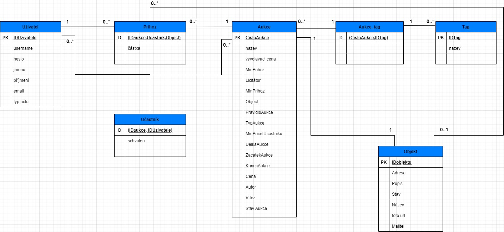

| Login | Heslo |
|---|---|
| admin1 | iisadmin1 |
| admin2 | iisadmin2 |
| admin3 | iisadmin3 |
| Login | Heslo |
|---|---|
| licitator1 | iislicitator1 |
| licitator2 | iislicitator2 |
| licitator3 | iislicitator3 |
| Login | Heslo |
|---|---|
| user1 | iisuser1 |
| user2 | iisuser2 |
| user3 | iisuser3 |
(Diagram případů užití není nutné vkládat, pokud IS implementuje role a případy užití definované zadáním.)
Backend je implementován pomocí NodeJS frameworku Express.
Aplikace je navrhnutá jako soubor cest (endpointů) pro získávání a manipulaci dat.
Autentizace dotazů je prováděna pomocí session cookies - cookie obsahující session ID, veškerá data sezení jsou
uložena v databázi
Komunikace využívá formátu JSON, jak data POST dotazů, tak odpovědi. Typický tvar odpovědi je
{success: bool, message: string, data: Optional(Any)}
api/
├─ admin/
├─ licit/
├─ user/
├─ auction/:id/
│ ├─ user/
│ ├─ licit/
│ ├─ admin/
Veřejné endpointy jsou umístěny do kořenů (/api, /api/auction/:id), ostatní podle
požadovaných práv (Například endpointy v /api/licit jsou přístupné pouze pro licitátory)
GET : /api/admin/stats/sessions
GET : /api/admin/db-status
GET : /api/admin/server-status
GET : /api/admin/users
POST : /api/admin/change-user-data/
Metoda jako parametry bere JSON se
dvěma klíči: id a userdata - kolekce vlastností ke změně
{
"id": "4",
"user_data": {
"Jmeno": "admin-changed-my-name",
"Prijmeni": "last-name-too"
}
}
DELETE : /api/admin/delete-user/:id
GET : /api/licit/my-auctions
GET : /api/licit/auctions
GET : /api/licit/all-unconfirmed-participants
GET : /api/auction/:id/licit/list-participants
POST : /api/auction/:id/licit/join
POST : /api/auction/:id/licit/evaluate
{
winner_id: 4
}
POST : /api/auction/:id/licit/confirm
POST : /api/auction/:id/licit/reject
POST : /api/auction/:id/licit/start
GET : /api/auction/:id/user/can-join
GET : /api/user/auctions-member
GET : /api/user/my-objects
GET : /api/user/my-auctions
POST : /api/auction/:id/user/upload-photo
soubor, multipart/form-data
POST : /api/user/auction
{
"nazev": "Chata za mestem",
"vyvolavaci_cena": 150000,
"min_prihoz": 5000,
"object": 4,
"pravidlo": "otevrena",
"typ": "nabidkova",
"tagy": ["Zahrada", "2 pokoje", "Studna"],
"objekt": {
"nazev": "Chata",
"adresa": "--",
"popis": "Chata se studnou blízko řeky",
"foto_url": null
}
}
POST : /api/user/can-join-auctions
{
auctions: [1, 2, 3, 4, 5, 6, 2000]
}
POST : /api/user/change-user-data
Metoda jako parametry bere staré heslo a JSON se
dvěma klíči: uživatelské jméno a typ účtu
{
"password": "oldpasswordtoconfirm",
"user_data": {
"Jmeno": "Marek",
"Typ": "licitator"
}
}
POST : /api/user/object
"objekt": {
nazev: 'Chata za mestem'
adresa: 'Kraví 19, Ostrava',
popis: 'popis nemovitosti',
foto_url: null
}
POST : /api/auction/:id/user/bid
Metoda jako parametr bere JSON - výši
nabídky
{
"bid": 80050
}
POST : /api/auction/:id/user/upload-photo
POST : /api/auction/:id/user/join
DELETE : /api/auction/:id/user/leave
GET : /api/auction/:id
GET : /api/auction/:id/photo
GET : /api/ending-auctions?number=3
GET : /api/auctions
Tato funkce bere dva GET parametry: offset, number (to
značí, kolik aukcí se má načíst od zvoleného offsetu)
/api/auctions?offset=0&number=20
GET : /api/auction/:id/bids
GET : /api/get-session-info
POST : /api/login
{
"username": "admin1",
"password": "iisadmin1"
}
POST : /api/register
{
"first_name": "Jan",
"last_name": "Novák",
"username": "novakjede123",
"password": "1j2a3nJEBOREC",
"email": "j.novak@gmail.com"
}
POST : /api/logout
ER diagram reprezentující strukturu naší databáze 
npm install
npm run build
PG_CONN_STRING a
SESSION_SECRET
npm install
node server.js
PG_CONN_STRING (connection string pro PostgreSQL)SESSION_SECRET (řetězec pro šifrování cookies)util/schema.sql (vykonat
např. pomocí psql)util/db_seed.js
(spustitelný příkazem node util/db_seed.js). Alternativně SQL skript util/db_seed.sqlZde popište, které body zadání nejsou implementovány a z jakého důvodu. Např. „Z časových důvodů nebyla implementována správa uživatelů.” Pomůžete tím zrychlit hodnocení, když neimplementované funkce nebudeme muset dlouze hledat.
Doba trvání aukce je vždy nastavena na 7 dní. Pro projekt jsme délku změnili na 30 dní, aby v době opravování projektu stále existovaly probíhající aukce.